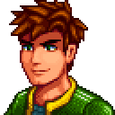
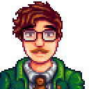
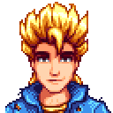
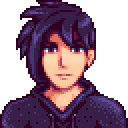
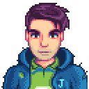
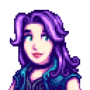
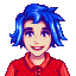
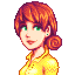

Vesničané
V Pelican Town žije přes třicet obyvatel a dvanáct z nich je svobodných, takže s nimi můžete začít i vztah. Přátelství se buduje tak, že si s vesničany povídáte a nosíte jim dárky, které mají rádi.
Každému můžete dát nejvýš dva dárky týdně. O narozeninách má ale dárek osminásobný účinek, proto doporučuju si jejich data někam poznamenat.
Svobodní muži
-

Alex
Sebevědomý sportovec, který sní o tom, že se jednou stane profesionálním hráčem gridballu. Zatím bydlí u prarodičů.
- Narozeniny:
- 13. den léta
- Má rád:
- kompletní snídani, lososa na večeři
-

Elliott
Romantický spisovatel, který bydlí v chatce na pláži a pořád píše svůj první román.
- Narozeniny:
- 5. den podzimu
- Má rád:
- krabí placičky, kachní pero, humra
-

Harvey
Místní lékař, starostlivý a trochu nesmělý. Ve volném čase ho baví letadla.
- Narozeniny:
- 14. den zimy
- Má rád:
- kávu, víno, nakládanou zeleninu
-

Sam
Pohodář s kytarou, který jezdí na skateboardu a se Sebastianem má kapelu.
- Narozeniny:
- 17. den léta
- Má rád:
- pizzu, kaktusové ovoce
-

Sebastian
Uzavřený programátor, který bydlí ve sklepě a nejradši ze všeho jezdí na motorce.
- Narozeniny:
- 10. den zimy
- Má rád:
- sashimi, obsidián, zmrzlou slzu
-

Shane
Ze začátku dost nepříjemný zaměstnanec obchodu Joja. Má rád svoje kuřata a časem se vám otevře.
- Narozeniny:
- 20. den jara
- Má rád:
- pivo, pizzu, pálivou papriku
Svobodné ženy
-

Abigail
Dcera majitelů obchodu se smíšeným zbožím, která miluje dobrodružství. Hraje videohry a ráda chodí do dolů.
- Narozeniny:
- 13. den podzimu
- Má ráda:
- ametyst, dýni, čokoládový dort
-

Emily
Barevná a vždycky pozitivní servírka ze saloonu. Šije si vlastní oblečení a zajímá se o krystaly.
- Narozeniny:
- 27. den jara
- Má ráda:
- drahokamy, látku, vlnu
-

Haley
Na první pohled působí povrchně, ale časem ukáže svou citlivější stránku. Ráda fotí.
- Narozeniny:
- 14. den jara
- Má ráda:
- kokos, slunečnici, růžový dort
-

Leah
Umělkyně, která vyřezává sochy ze dřeva a bydlí v chatce u lesa.
- Narozeniny:
- 23. den zimy
- Má ráda:
- kozí sýr, salát, víno
-

Maru
Vynálezkyně, která staví roboty a pomáhá na klinice. Ve volném čase pozoruje hvězdy.
- Narozeniny:
- 10. den léta
- Má ráda:
- baterie, jahody, diamant
-

Penny
Tichá a laskavá dívka, která učí místní děti a ve volnu ráda čte.
- Narozeniny:
- 2. den podzimu
- Má ráda:
- meloun, mák, diamant